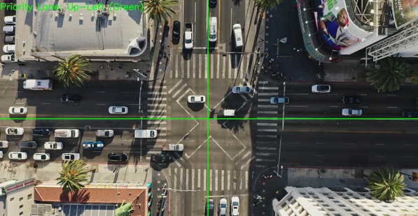
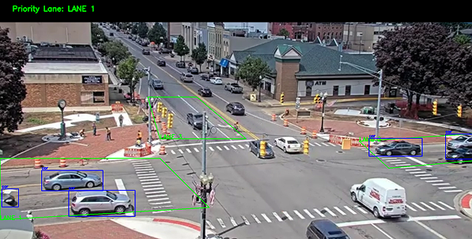

Project Description
The Smart Traffic Management System (STMS) is a project developed for our AI course at BINUS University. As the Tech Lead and AI Developer, I created an AI model using YOLOv5 and Python that detects vehicles in each lane and dynamically prioritizes which lane should turn green first to optimize traffic flow. My teammate developed the course proposal while I focused on building and integrating the AI, resulting in a system that reduced simulated congestion. This project strengthened my skills in AI integration, real-time decision-making, and project leadership.



